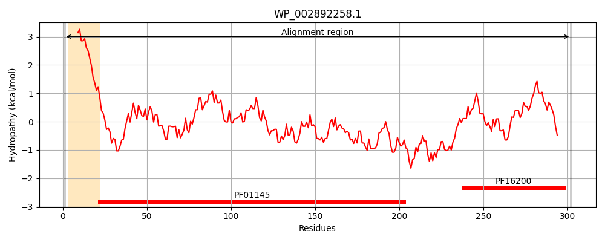
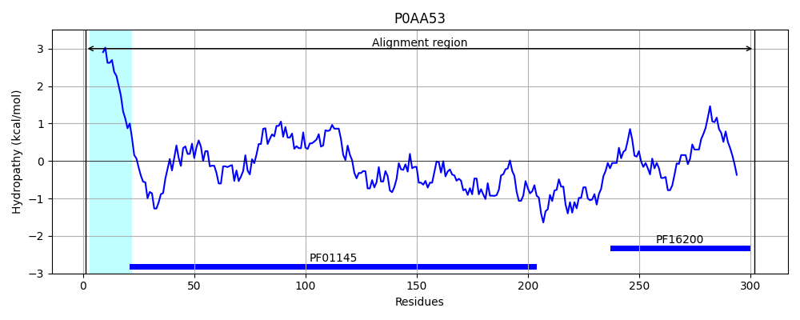
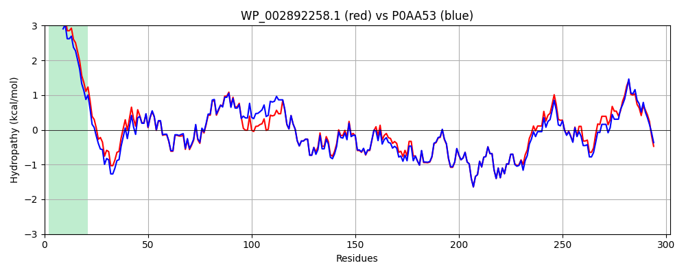

Hit Accession: P0AA53
Hit TCID: 8.A.21.2.2
Hit Description: gnl|BL_ORD_ID|8642 gnl|TC-DB|P0AA53|8.A.21.2.2 Protein QmcA OS=Escherichia coli (strain K12) GN=qmcA PE=1 SV=1
Mach Len: 302
e:0.000000
Query TMS Count : 1
Hit TMS Count: 1
TMS-Overlap Score: 1.000000
Predicted Substrates:None
BLAST Alignment:
Score: 1364 , Bit scores: 530 bits, E-value: 0.0e+00, Alignment length: 302, Percentage identity: 89
Query: 1 MLIFIPILIFVALVIVAAAVKIVPQGYQWTVERFGRFTQTLQPGLSLVVPFMDRIGRKVNMMEQVLDIPSQEVISRDNANVTIDAVCFIQVIDAPKAAYEVSNLEQAIVNLTMTNIRTVLGSMELDEMLSQRDSINTRLLHIVDDATNPWGVKITRVEIRDVRPPAELIASMNAQMKAERTKRAYILEAEGVRQAEILKAEGEKQSQILKAEGERQSAFLQAEARERSAEAEARATQMVSSAIASGDIQAINYFVAQKYTDALQQIGAANNSKVVLMPLDASSLMGSIAGISELIKEGAGDR 302
MLIFIPILIFVALVIV A VKIVPQGYQWTVERFGR+T+TLQPGLSLVVPFMDRIGRK+NMMEQVLDIPSQEVIS+DNANVTIDAVCFIQVIDAP+AAYEVSNLE AI+NLTMTNIRTVLGSMELDEMLSQRDSIN+RLL IVD+ATNPWG+K+TR+EIRDVRPPAELI+SMNAQMKAERTKRAYILEAEG+RQAEILKAEGEKQSQILKAEGERQSAFLQAEARERSAEAEARAT+MVS AIASGDIQA+NYFVAQKYT+ALQQIG+++NSKVV+MPL+ASSLMGSIAGI+EL+K+ A R
Sbjct: 1 MLIFIPILIFVALVIVGAGVKIVPQGYQWTVERFGRYTKTLQPGLSLVVPFMDRIGRKINMMEQVLDIPSQEVISKDNANVTIDAVCFIQVIDAPRAAYEVSNLELAIINLTMTNIRTVLGSMELDEMLSQRDSINSRLLRIVDEATNPWGIKVTRIEIRDVRPPAELISSMNAQMKAERTKRAYILEAEGIRQAEILKAEGEKQSQILKAEGERQSAFLQAEARERSAEAEARATKMVSEAIASGDIQAVNYFVAQKYTEALQQIGSSSNSKVVMMPLEASSLMGSIAGIAELVKDSANKR 302 | Protein Hydropathy Plots: |
|---|
|  |  |
Pairwise Alignment-Hydropathy Plot:
|
|---|
|  |